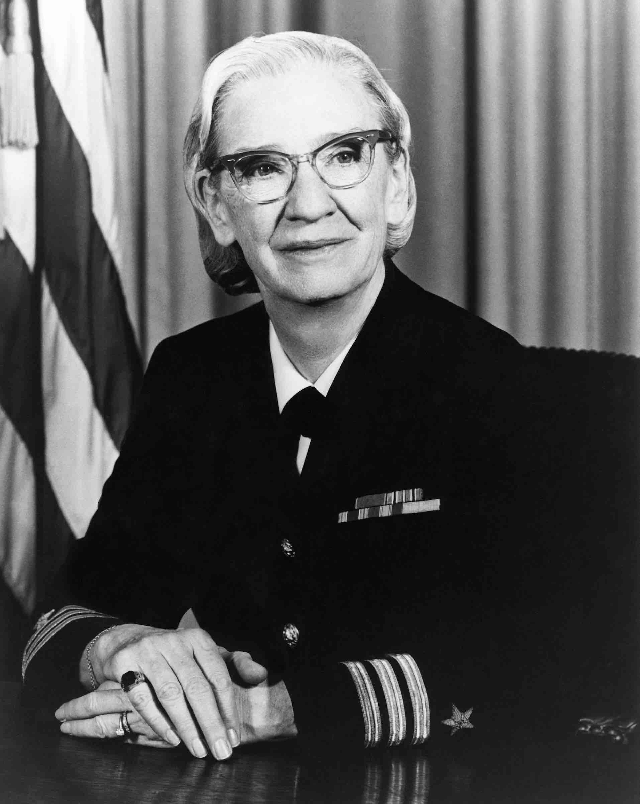

Grace Murray Hopper
Almirante da Marinha dos EUA & Cientista da Computação (1906 – 1992)

Biografia e Carreira Militar
Grace Murray Hopper foi PhD em Matemática pela Universidade Yale e alcançou o posto de Contra-Almirante na Marinha dos Estados Unidos. Pioneira na computação das décadas de 1940 e 1950, ela ajudou a programar o Harvard Mark I durante a Segunda Guerra Mundial e dedicou a vida a tornar a programação acessível.
A Invenção do Compilador e o COBOL
No início dos anos 1950, Grace desafiou a crença dominante de que computadores só serviam para contas matemáticas. Ela desenvolveu o primeiro compilador da história (o A-0), que traduzia linguagem humana para código de máquina. Mais tarde, criou a linguagem Flow-Matic, que serviu de base principal para o nascimento do COBOL, linguagem corporativa utilizada em sistemas bancários ao redor do mundo até os dias de hoje.
O Primeiro "Bug" de Computador
Ficou famosa também por popularizar o termo "debugging" ao encontrar uma mariposa real presa nos relés do computador Mark II, colando o inseto no diário de bordo com a anotação: "Primeiro caso real de bug encontrado".
"É mais fácil pedir perdão do que pedir permissão."
— Grace Hopper